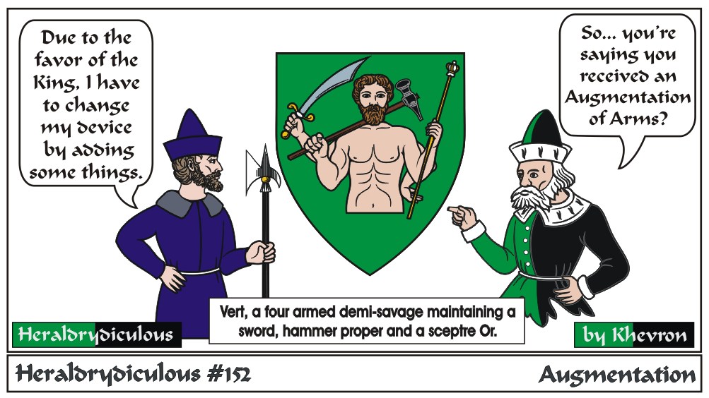

An Augmentation of Arms is an honor given by the Crown, however it is usually a charge or badge in canton (or chief, or sometimes elsewhere on an inescutcheon, lozenge or other forms in a way to go with the original arms design)
added to the registered arms of the individual, and can also be registered with the SCA College of Arms.
More in depth article at: Abatements and Augmentations of Honor By Dom Pedro de Alcazar
It isn't more limbs or weapons (but it IS up to the Crown...).
e-mail: 
Back to Khevron's Heraldry Page